TesterLab에서 전해드리는 다양한 이야기

우리가 사용하는 말투는 운의 흐름을 결정하는 강력한 설계도입니다. 행운을 불러오는 '골든 워딩'과 대화법으로 당신의 인생을 긍정의 풍요로 채우는 비결을 공개합니다.
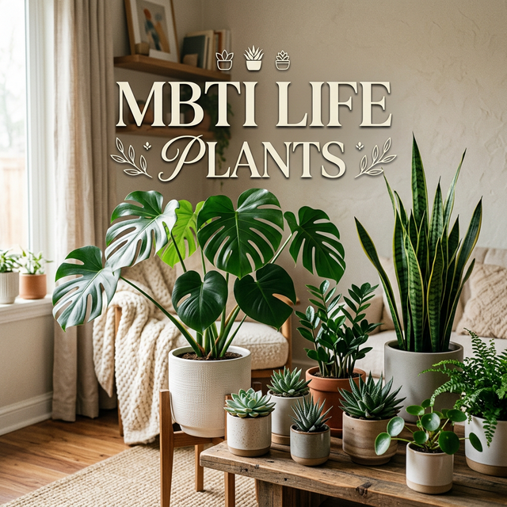
내 MBTI 성향에 딱 맞는 반려식물은 무엇일까요? 초보 식집사도 실패하지 않는, 성격 지표별 마법 같은 식물 매칭 가이드를 공개합니다.
MBTI 성향을 바탕으로 나에게 꼭 맞는 인생 술과 음주 스타일을 알아보세요. 북적이는 축제형부터 고요한 혼술형까지, 당신의 잔에 담긴 진심을 찾아드립니다.

누군가에게 기억되는 향기는 당신의 MBTI와 조화를 이루어야 합니다. 당신의 매력을 극대화할 '인생 향수'를 찾는 가이드를 확인해보세요.
MBTI 성향에 따라 공감을 느끼는 포인트와 세상을 해석하는 프레임이 다릅니다. 내 MBTI 지표를 바탕으로 인생작을 찾는 가이드를 확인해보세요.
내 MBTI 성향을 바탕으로 인생 여행을 만드는 맞춤형 전략을 확인해보세요. E/I, S/N, J/P 성향별 최적의 여행 방식과 팁을 공개합니다.
내 MBTI 성향을 바탕으로 지루한 일상에 활력을 불어넣어 줄 '인생 취미'를 찾아보세요. E/I, S/N, J/P 성향에 맞는 최적의 활동을 추천해 드립니다.
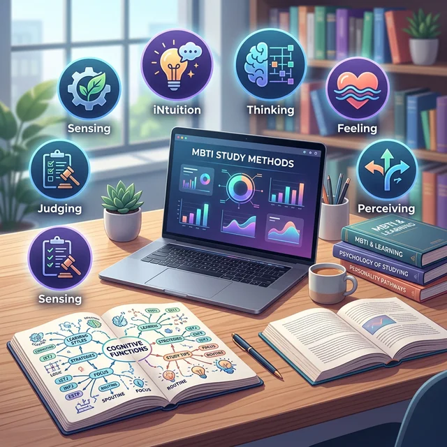
자신의 성격 유형과 맞지 않는 방식으로 에너지를 쓰고 있지 않나요? MBTI 성향에 맞춘 200% 효율 공부 전략을 정리해 드립니다.
관상은 타고난 생김새만이 아닙니다. 미간, 이마, 코, 턱 등 얼굴 부위별 운을 부르는 특징과 인상을 바꾸는 실전 팁을 알려드립니다.
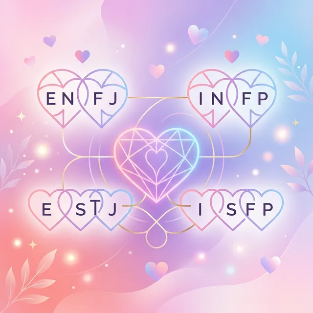
MBTI를 통해 서로의 '연애 언어'를 읽는 법과, 초보자도 쉽게 따라 할 수 있는 관계 개선 팁을 정리해 드립니다.
현대인에게 스트레스는 떼려야 뗄 수 없는 존재입니다. MBTI를 바탕으로 뇌와 마음이 가장 편안해지는 '맞춤형 스트레스 해소법'을 정리해 드립니다.
MBTI 결과가 자주 바뀌어 고민이신가요? 환경과 심리 상태에 따른 변화 이유와 진짜 내 성격을 찾는 정확한 검사 요령을 알려드립니다.
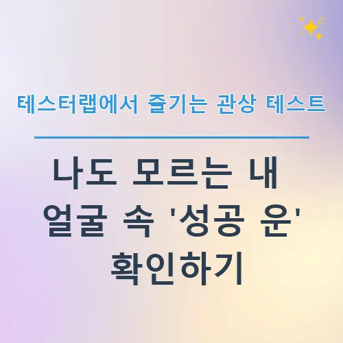
관상이나 MBTI처럼 나를 알아가는 과정은 언제나 흥미롭습니다. 특히 최근 테스터랩에서 제공하는 다양한 테스트들은 단순한 재미를 넘어, 나 자신을 객관적으로 바라보게 만드는 묘한 매력이 있죠. 오늘은 그중에서도 많은 분이 궁금해하시는 '관상 테스트'를 중심으로, 어떻게...
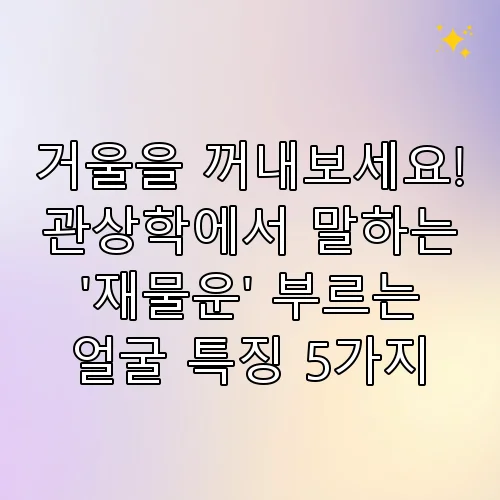
누구나 한 번쯤은 "나는 부자가 될 수 있을까?"라는 생각을 해보셨을 겁니다. 서점에 가면 재테크 관련 책이 베스트셀러 칸을 차지하고, 유튜브에서는 부업과 투자 영상이 매일 쏟아집...
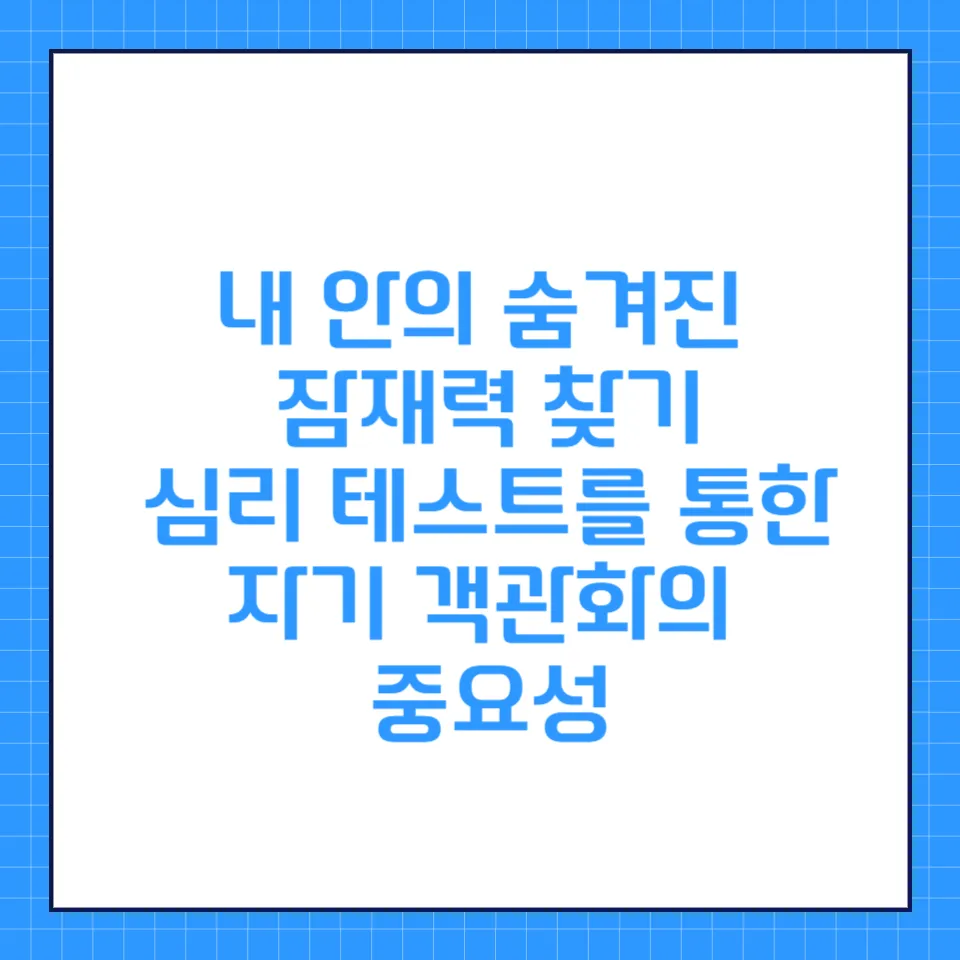
자신의 잠재력을 발견하고 싶다면 심리 테스트를 활용해보세요. 객관적인 자기 이해와 성장을 위한 가이드를 확인하세요.
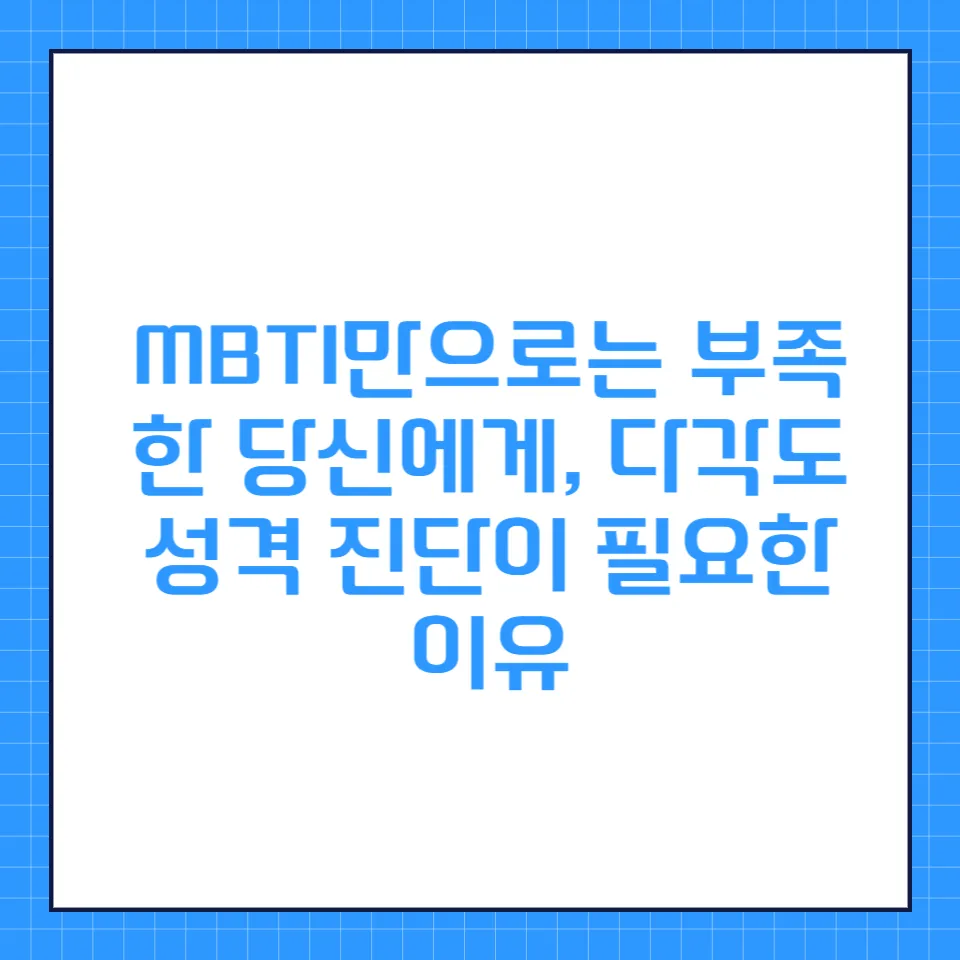
MBTI만으로는 부족한 당신의 진짜 모습, 다각도 성격 진단으로 입체적인 자기 이해를 시작해보세요.
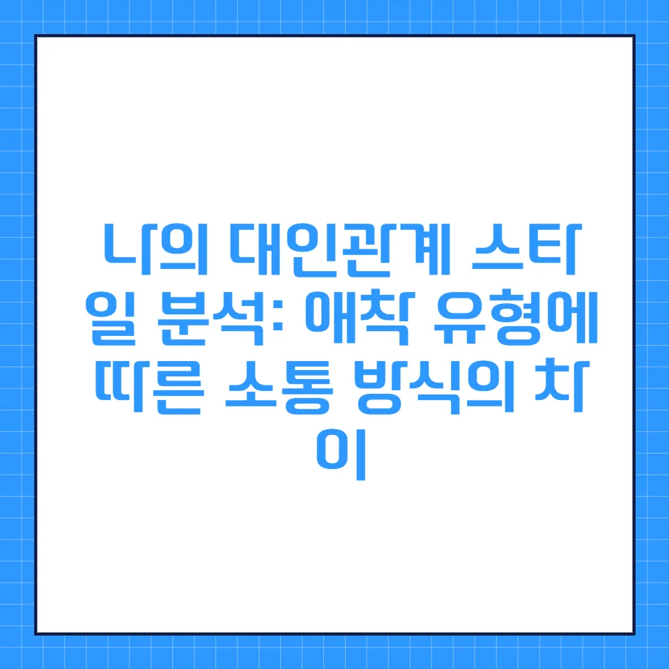
나는 어떤 애착 유형일까? 관계의 패턴을 파악하고 더 풍요로운 사회적 관계를 맺는 구체적인 전략을 알아보세요.
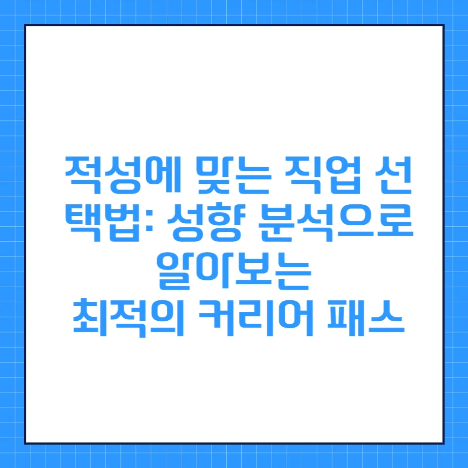
자신에게 맞는 커리어를 찾고 싶나요? 성향 분석과 적성 기반 직업 탐색 전략으로 만족스러운 커리어 로드맵을 그려보세요.
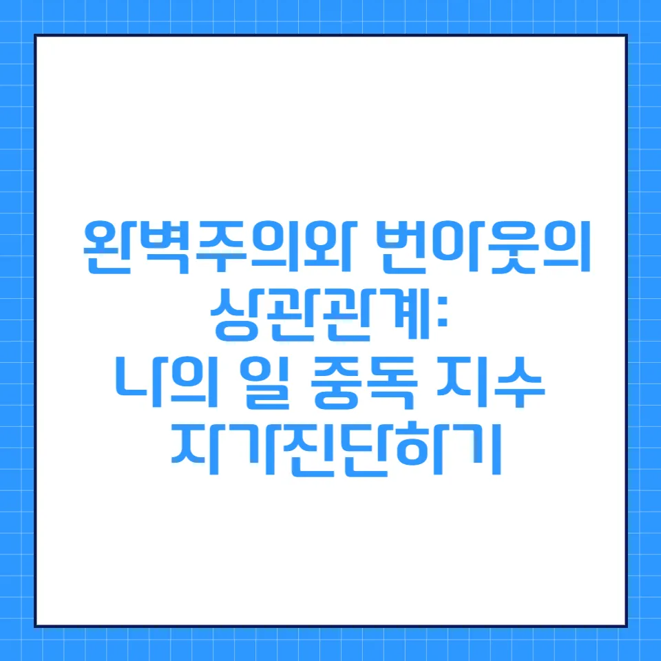
끝없는 완벽을 추구하다 지친 당신을 위한 번아웃 예방 가이드. 자가진단을 통해 현재 상태를 점검해보세요.
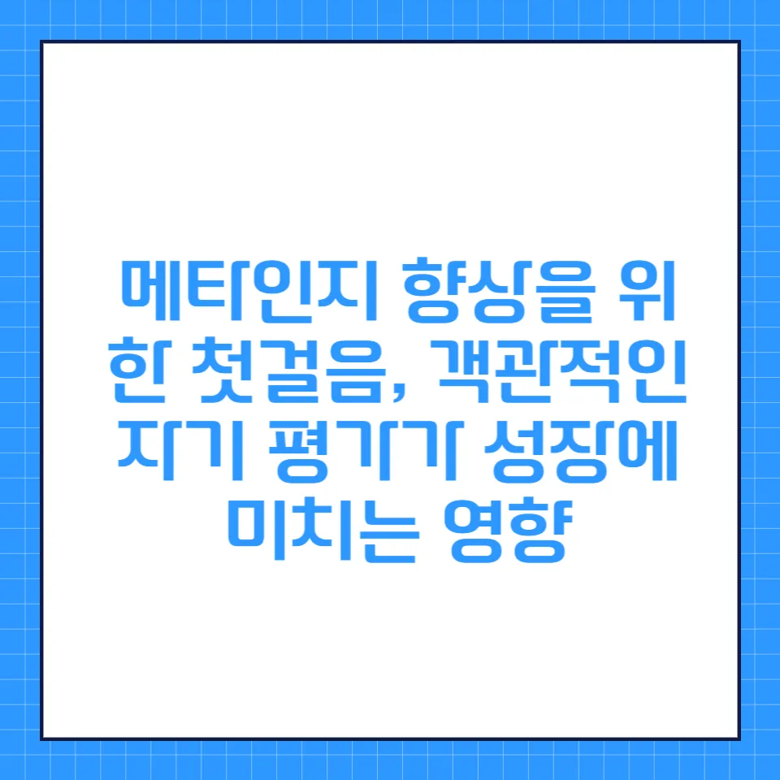
'내가 무엇을 아는지 모르는지'를 아는 능력, 메타인지. 객관적인 자기 평가를 통해 잠재력을 발휘하는 법을 알아보세요.
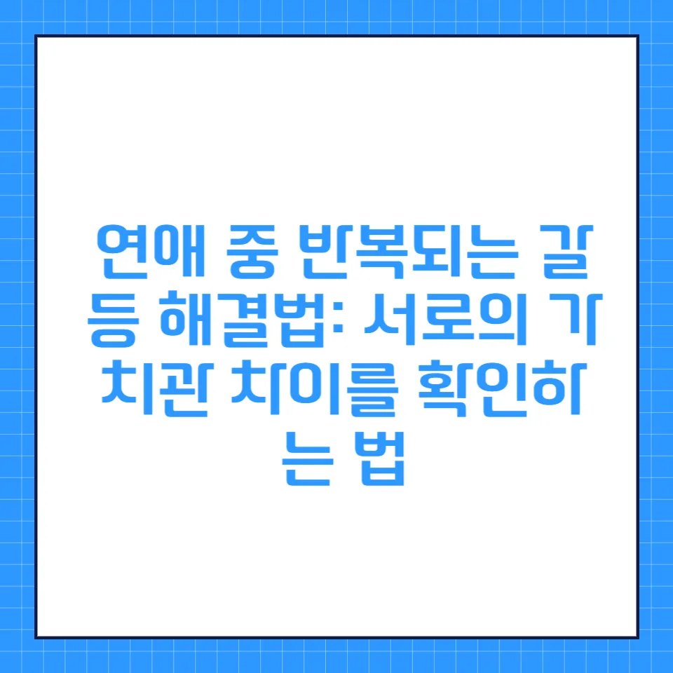
반복되는 연애 갈등, 혹시 가치관 차이 때문인가요? 다름을 인정하고 성숙한 관계를 만드는 실질적인 소통 전략을 확인하세요.
무기력하고 자신감이 떨어졌나요? 5가지 핵심 심리 지표로 현재 내 자존감 상태를 점검하고 회복을 위한 첫걸음을 내딛어보세요.
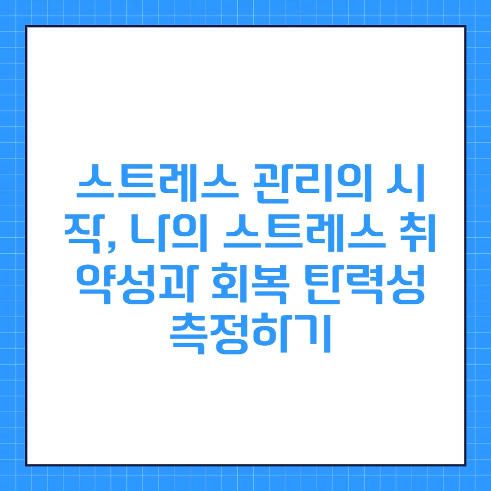
스트레스에 얼마나 민감하신가요? 자가진단 방법과 회복 탄력성을 키우는 4가지 전략을 통해 마음의 근력을 키워보세요.
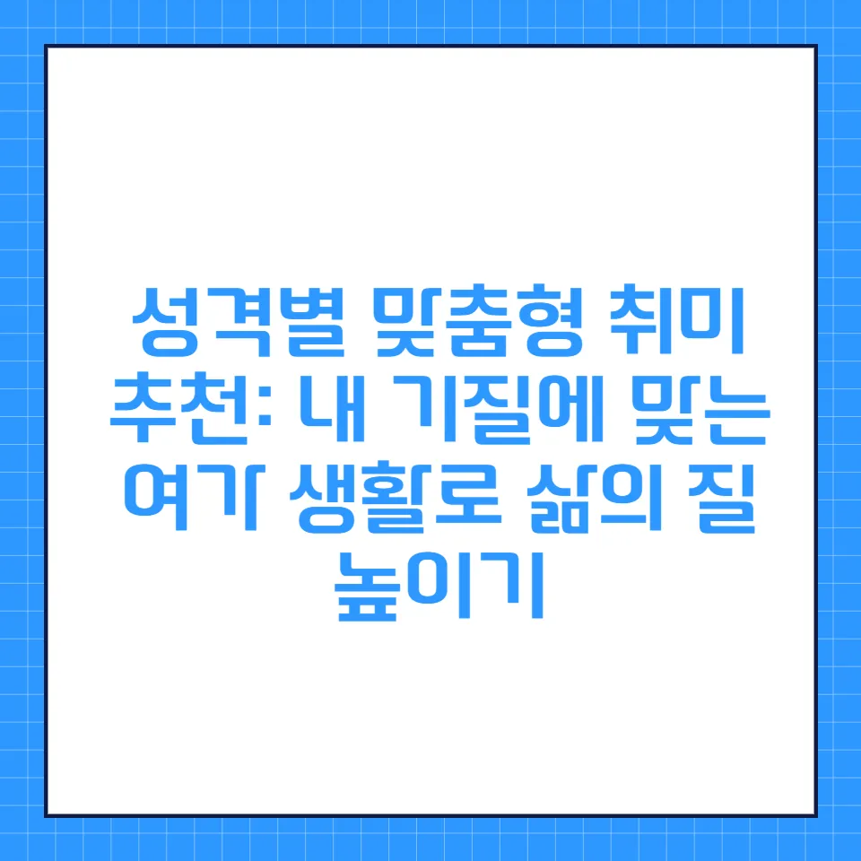
나에게 딱 맞는 취미는 무엇일까? 성향 분석을 통해 스트레스는 줄이고 삶의 에너지를 채워주는 최적의 취미 활동을 찾아보세요.